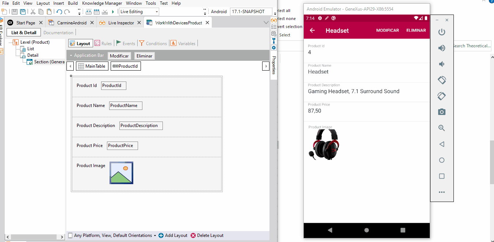

Establishes the width for an Attribute class of a Theme object.
Scope Objects: Theme Description
Setting this property allows you to align all labels of the same length. ConsiderationsWhen the label width has a very small value and overlaps the control, you may need to adjust the RowSpan property from the control. Run-time/Design-timeThis property applies only at design-time. Samples
 How to apply changesTo apply the corresponding changes when the property value is configured, execute a Rebuild All. |
| Backlinks | ||
| Attribute theme-class | Responsive Sizes property | Slider Theme class |